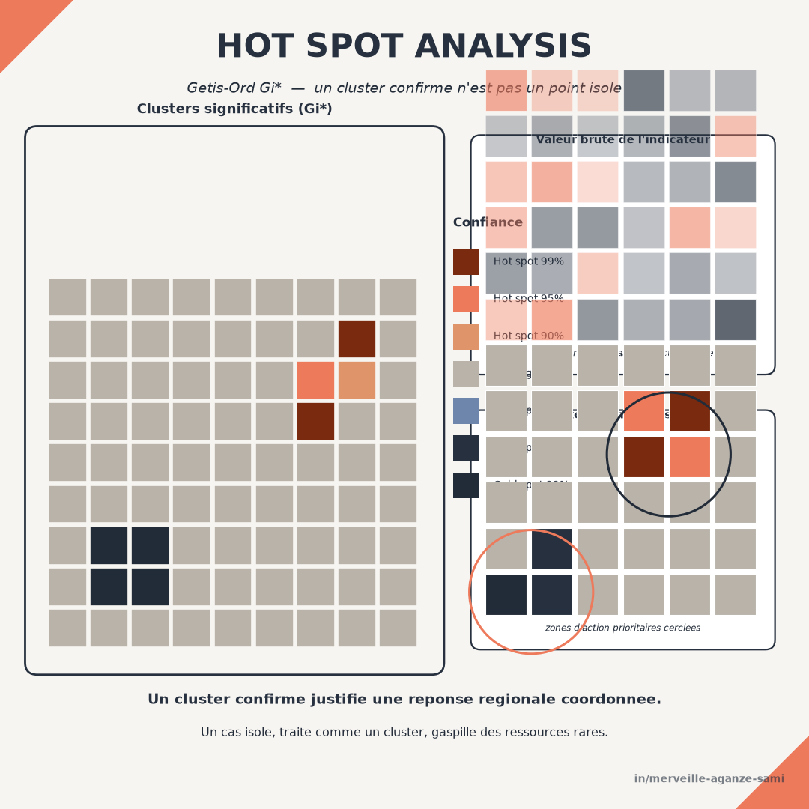

La priorisation territoriale s'appuie couramment sur une comparaison unité par unité : chaque zone est confrontée à un seuil, classée au-dessus ou en dessous, et la liste des zones en difficulté est établie. Cette procédure traite implicitement les unités comme indépendantes les unes des autres.
Cette hypothèse pose une difficulté d'interprétation. Une zone dont l'indicateur est faible et dont les voisines présentent des valeurs comparables décrit une situation différente d'une zone isolée entourée de valeurs élevées. La première suggère un déterminant régional — barrière d'accès, contexte agro-écologique, défaillance d'un dispositif structurant ; la seconde relève plus probablement d'une cause locale ou d'une variabilité d'échantillonnage. Les deux appellent des réponses distinctes.
1. Ce que mesure la statistique locale
La statistique de Getis-Ord compare, pour chaque unité, la somme des valeurs observées dans son voisinage — l'unité incluse dans sa version étoilée — à la somme que l'on attendrait si les valeurs étaient réparties sans structure spatiale. L'écart est normalisé en une valeur centrée réduite, dont le signe indique un regroupement de valeurs élevées ou faibles et l'amplitude le degré d'écart à l'hypothèse d'absence de structure (Getis & Ord, 1992). Les propriétés distributionnelles de cette famille de statistiques locales ont été précisées ultérieurement (Ord & Getis, 1995).
Une statistique parmi d'autres. Cette approche identifie des regroupements de valeurs de même signe. Les indicateurs locaux d'association spatiale de type LISA répondent à une question voisine mais distincte : ils détectent également les associations négatives, c'est-à-dire les unités dont la valeur contraste avec celle de leur voisinage (Anselin, 1995). Les deux familles sont complémentaires — ce sujet est développé dans l'article consacré à l'autocorrélation spatiale.
2. La matrice de voisinage est la décision principale
Le résultat dépend directement de la définition retenue du voisinage. Quatre options sont d'usage courant, et le choix doit être justifié par la nature du phénomène plutôt que par le réglage par défaut du logiciel.
- Contiguïté. Deux unités sont voisines si elles partagent une limite. Adapté à un maillage administratif régulier, ce critère devient problématique lorsque les unités sont de tailles très inégales.
- Distance seuil. Toutes les unités situées à moins d'une distance donnée sont voisines. Le seuil doit correspondre à une échelle ayant un sens pour le phénomène — portée d'un bassin de desserte, rayon de mobilité.
- k plus proches voisins. Chaque unité dispose du même nombre de voisins, ce qui homogénéise le traitement lorsque la densité varie fortement, au prix d'une distance effective variable.
- Pondération continue. L'influence décroît avec la distance plutôt que de s'annuler à un seuil. Plus réaliste pour des phénomènes diffusifs, cette option requiert de fixer la forme de décroissance.
La bonne pratique consiste à tester la sensibilité du résultat à ce choix : si les points chauds identifiés se déplacent substantiellement d'une définition à l'autre, la conclusion n'est pas robuste et doit être présentée comme telle.
3. Le problème des tests multiples
Une statistique locale est calculée pour chaque unité du territoire. Sur plusieurs centaines d'unités, un certain nombre de résultats significatifs apparaissent par le seul effet de la multiplicité des tests. Retenir un seuil conventionnel sans correction conduit donc à identifier des regroupements qui n'en sont pas.
Deux difficultés se cumulent ici : la multiplicité des tests et leur dépendance, les voisinages se chevauchant. Une correction du taux de fausses découvertes (Benjamini & Hochberg, 1995) constitue une réponse mieux adaptée qu'une correction très conservatrice, et son application au cas particulier des statistiques locales d'association spatiale a été documentée (Caldas de Castro & Singer, 2006). Une alternative consiste à établir la distribution de référence par permutations plutôt que par une approximation théorique.
4. Ce qui peut fausser la lecture
- Effet du découpage. Le résultat dépend du niveau d'agrégation et du tracé des unités. Un même phénomène analysé au niveau du territoire de santé ou de l'aire de santé peut produire des cartes de points chauds différentes. Cette dépendance est une propriété générale des données agrégées spatialement (Fotheringham & Wong, 1991).
- Effectifs bruts et taux. Une statistique calculée sur des effectifs reflète largement la répartition de la population. L'analyse doit porter sur un taux ou une proportion lorsque la question concerne une intensité relative.
- Variance instable sur petites populations. Un taux calculé sur un dénominateur faible présente une variabilité élevée, ce qui produit des valeurs extrêmes indépendantes de tout phénomène réel. Un lissage préalable ou une méthode tenant compte du dénominateur est alors nécessaire.
- Confusion entre significativité et intensité. Une valeur significative indique un regroupement improbable sous l'hypothèse d'absence de structure, non un besoin élevé. La priorisation doit croiser significativité spatiale et niveau de l'indicateur.
5. Usage pour la priorisation
Croisée avec la valeur brute de l'indicateur, la statistique locale fournit une grille de lecture à quatre positions : valeur défavorable au sein d'un regroupement significatif, qui justifie une réponse coordonnée à l'échelle du groupe ; valeur défavorable isolée, qui appelle un diagnostic local ; valeur favorable au sein d'un regroupement, qui peut servir de référence ; valeur favorable isolée, dont le caractère atypique mérite examen.
Cette grille rend la décision de ciblage explicable. Elle indique non seulement où intervenir, mais à quelle échelle — arbitrage qui reste le plus souvent implicite dans une simple liste ordonnée de zones.
Points essentiels
- Une valeur faible isolée et une valeur faible groupée ne décrivent pas la même situation
- La statistique compare le voisinage observé à ce qu'attendrait une répartition sans structure
- La définition du voisinage détermine le résultat et doit être justifiée puis testée
- Sans correction des tests multiples, des regroupements apparaissent par le seul jeu du hasard
- La priorisation croise significativité spatiale et niveau de l'indicateur, jamais l'une sans l'autre
La significativité spatiale ne remplace pas la valeur de l'indicateur ; elle en précise la portée. Elle indique si un constat local relève d'un phénomène étendu ou d'une situation particulière, et cette distinction détermine l'échelle de la réponse.
Références
- Anselin, L. (1995). Local Indicators of Spatial Association—LISA. Geographical Analysis, 27(2), 93–115. doi.org/10.1111/j.1538-4632.1995.tb00338.x
- Benjamini, Y., & Hochberg, Y. (1995). Controlling the False Discovery Rate: A Practical and Powerful Approach to Multiple Testing. Journal of the Royal Statistical Society: Series B, 57(1), 289–300. doi.org/10.1111/j.2517-6161.1995.tb02031.x
- Caldas de Castro, M., & Singer, B. H. (2006). Controlling the False Discovery Rate: A New Application to Account for Multiple and Dependent Tests in Local Statistics of Spatial Association. Geographical Analysis, 38(2), 180–208. doi.org/10.1111/j.0016-7363.2006.00682.x
- Fotheringham, A. S., & Wong, D. W. S. (1991). The modifiable areal unit problem in multivariate statistical analysis. Environment and Planning A, 23(7), 1025–1044. doi.org/10.1068/a231025
- Getis, A., & Ord, J. K. (1992). The Analysis of Spatial Association by Use of Distance Statistics. Geographical Analysis, 24(3), 189–206. doi.org/10.1111/j.1538-4632.1992.tb00261.x
- Ord, J. K., & Getis, A. (1995). Local Spatial Autocorrelation Statistics: Distributional Issues and an Application. Geographical Analysis, 27(4), 286–306. doi.org/10.1111/j.1538-4632.1995.tb00912.x

Merveille Aganze Sami
Conseillère MEL & Gestion de Bases de Données. Plus de 9 ans d'expérience en suivi-évaluation, SIG et digitalisation auprès d'organisations internationales (GIZ, Enabel) en RD Congo.
Une priorisation territoriale à objectiver ?
Prendre contact